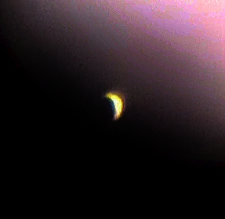
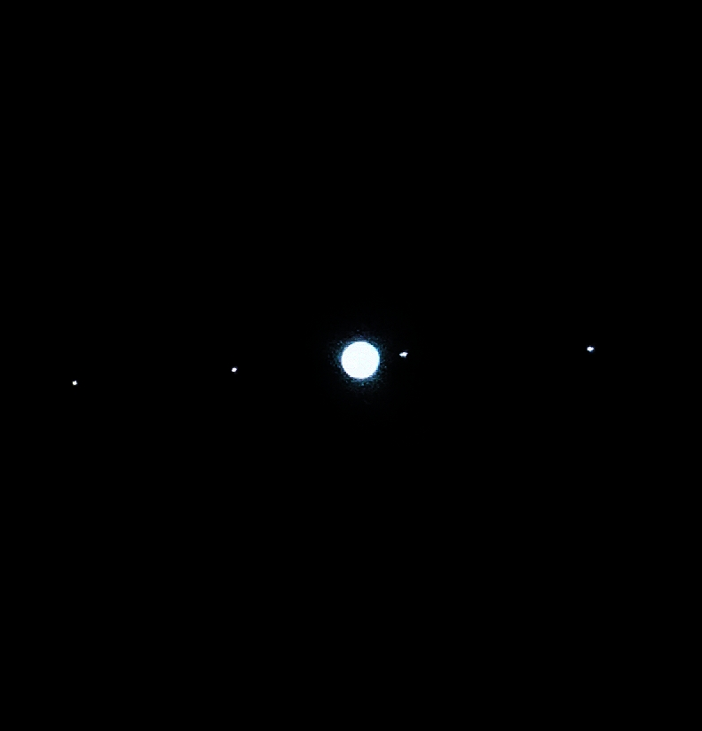
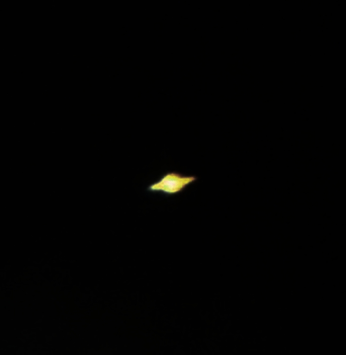
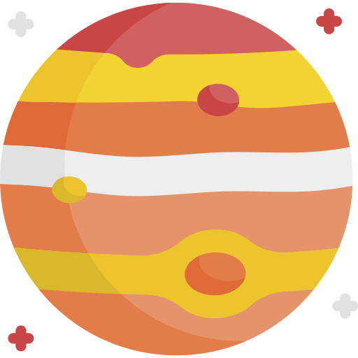

Как Вы догадываетесь, наша жизнь это нечто большее, чем бесконечный цикл "Работа-Сон". Вокруг нас есть множество интересных загадок, одна из которых заметна ночью. Если Вы забудете про сон, выйдете на незагрязнённое светом пространство, то сможете насладиться
бесконечно манящей вселенной. На этом сайте Вы сможете найти информацию про наиболее
заметные и интересные объекты нашего звездного неба, которые либо видны невооруженным
глазом, либо легко находятся даже большефокусным окуляром телескопа-рефлектора.
Разумеется, фотографии не всегда верно и четко отображают действительность, поэтому
для глубины и полноты ощущений рекомендуем Вам приобрести свой телескоп. Для этого можете перейти по ссылке и посмотреть подробные разборы лучших телескопов на любой вкус и кошелёк. Выбрав телескоп, можно начинать свои личные наблюдения!
Луна. Естественный спутник нашей планеты безоговорочно является самым доступным для наблюдения объектом ночного (а иногда даже дневного) неба. Луну можно легко найти и рассмотреть даже в телескоп с небольшой апертурой. На фотографии слева Вы можете увидеть изображение спутника, снятое днём с увеличение всего лишь 36 крат через телескоп с апертурой 114мм. Для некоторых видеть Луну на необычном голубом фоне дневного неба даже более интересно, чем в ночи, зрелище завораживающее. Расстояние до луны в среднем около 380 тысяч километров, а её диаметр 3474 километра. Масса Луны в 81 раз меньше земной, а плотность меньше в 1,67 раза.

Венера. Сейчас без проблем можно видеть венеру ранним утром до восхода Солнца. По яркости она уступает только Солнцу и Луне, поэтому невооружённым глазом она видна, как очень яркая звезда, встающая на востоке. Однако если посмотреть на неё в телескоп, то можно разглядеть характерную месяцеобразную форму близжайшей к нашей Земле планеты. Из-за относительного положения Венеры увидеть её полностью освещённой получится только из космоса. Расстояние от Земли до Венеры меняется от 38 до 261 млн. километров, поэтому в некоторые промежутки времени она поражает нас своей яркостью больше обычного. Интересно то, что Венеру видно даже после восхода Солнца ещё некоторое время!

Юпитер. Наиболее вдохновляющий объкт на небе для меня это Юпитер Когда в телескоп его находишь в первый раз, думаешь, что смотришь на нашу солнечную систему, правда, очень необычную. Юпитер в телескоп виден с 4-6 своими самыми большими спутниками, очень сильная картина. При увеличении даже 36 крат уже видно его полосы, а при увеличении 180 крат можно увидеть большое красное пятно. Хоть расстояние до Юпитера и варьируется от 588 до 967 млн. километров, диаметр его в среднем около 140 тыс. километров, именно из-за его размера наблюдать за ним можно без каких либо усилий. Яркость Юпитера чуть меньше, чем яркость той же венеры, но он остается одним из самых ярких объектов ночного неба.

Сатурн. Для многих самым загадочным объектом, который видно невооруженным глазом, является Сатурн. И это неудивительно, ведь его кольца при изучении в телескоп просто завораживают Хоть Сатурн и дальше, и меньше, чем Юпитер, но его довольно легко "поймать" объективом даже не самого апертурного телескопа Разумеется, чем больше диаметр объектива, тем больше можно увидеть подробностей, например, щель Кассини между кольцами планеты. Диаметр этого газового гиганта почти в 10 раз больше диаметра Земли, а его среднее расстояние до нас около 1400 млн. километров. Что касается яркости, то у Сатурна она обычно невелика, если не знать, где он расположен, то его можно легко принять за тусклую звездочку, а то и совсем не заметить.
Разумеется, в космосе ещё много всего интересного: галактики, туманности, звёздные скопления и многое другоe! Именно поэтому сайт будет обновляться и загружать новые фотографии наблюдения нашего неба.
Таблица планетных характеристик
Планета
Масса
Радиус
Расстояние до Земли
Температура
3,3*10^23 кг
2439 км
91,6 млн. км
167°С
4,9*10^24 кг
6052 км
41,4 млн. км
464°С
6,44*10^23 кг
3386 км
78,3 млн. км
-65°С

1,9*10^27 кг
71492 км
628,4 млн. км
-110°С
5,68*10^26 кг
60268 км
1277,4 млн. км
-140°С
8,7*10^25 кг
25559 км
2721,4 млн. км
-195°С
1,03*10^26 кг
24764 км
4347,4 млн. км
-200°С
Любопытные факты
На Марсе находится самый большой вулкан в Солнечной системе — гора Олимп
Кольца Сатурна состоят из множества мелких кусков льда и камней разного размера: от пыли до размеров гор
Из всех планет нашей системы только Венера вращается в направлении, противоположном направлению вращения всех остальных планет
Из-за близости к Солнцу у Меркурия есть хвост, как у кометы
Нептун – первая планета, открытая благодаря математическим расчётам, а не визуальным наблюдениям
Самая плотная атмосфера принадлежит Венере, на её поверхности атмосферное давление в 92 раза выше, чем на Земле
Магнитное поле Юпитера сильнее магнитного поля Земли примерно в 2000 раз
На Венере случаются дожди, состоящие из серной кислоты